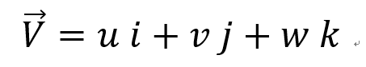
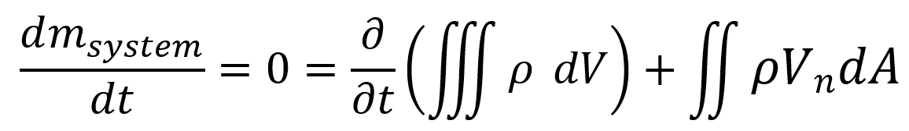

[Fluid Mechanics] Ch 4. Differential Relations for fluid flow - mass conservation
지난시간 Control volume method를 이용하고
Integral method를 같이 이용하여
유체의 흐름을 분석한
Renolds transport theorem 의 증명과 application에 대해서 알아보았다.
이번에는 Control volume이용 +
미분방정식을 이용한 방법을 살펴보자.
Control volume 분석(Eulerian description)을 사용하면 장점이
고정된 상자 안에서 들어오고 나가는 양을 분석할 수 있다는 것이다.
이제 그 상자를 좌표평면으로 표현한다면?? (x,y,z)
우리는 들어오고 나가는 Flux term을
differential method로 표현 할 수 있다.
However, 여기서 한가지 놓쳐서는 안될 부분이 있다.
바로 시간(t) 이다.
우리는 지금 시간에 따른 유체의 흐름에 대해서 분석하고 있다.
따라서, (x,y,z) 좌표평면으로 나타내지만
t도 또다른 변수 라는 것을 잊어서는 안된다!
무슨 말인지 감이 안오실 수도 있으니,
유체의 속도표현식을 살펴보면서 이해해보자.
x,y,z좌표평면에서 속도벡터는 x,y,z성분으로 나눌 수 있다(벡터의 성질)
Vx = u
Vy = v
Vz = w

지금부터 계속해서 이렇게 표현 할 것이다.
그렇다면 가속도는 어떻게 될까??
정의에 따라서,
a = dV/dt
이다.
따라서,
![[Fluid Mechanics] Ch 4. Differential Relations for fluid flow - mass conservation](./images/img-002.png)
x 성분 du/dt 만 먼저 구해보면, 각각 4가지 변수로 편미분을 해주어야 한다. + Chain rule
![[Fluid Mechanics] Ch 4. Differential Relations for fluid flow - mass conservation](./images/img-003.png)
핵심은
dx/dt = u, dy/dt = v, dz/dt = w 각각 속도성분이라는 것이다. 따라서,
![[Fluid Mechanics] Ch 4. Differential Relations for fluid flow - mass conservation](./images/img-004.png)
이렇게
Gradient
로 표현 가능하다.
이제 v,w 도 똑같이 편미분을 이용해보면,
![[Fluid Mechanics] Ch 4. Differential Relations for fluid flow - mass conservation](./images/img-005.png)
이제 3식을 모두 더해서 a = dV/dt = du/dt + dv/dt + dw/dt 를 구해보자.
![[Fluid Mechanics] Ch 4. Differential Relations for fluid flow - mass conservation](./images/img-006.png)
이렇게 x,y,z,t variable을 활용한 가속도는 다음과 같이 표현 할 수 있다.
가속도를 구하면서 정확히 이해하셨을꺼라 생각하고 다음주제로 넘어가 보겠습니다.
다시 핵심으로 돌아가보면,
우리는 유체의 흐름을 분석하기 위해서
Control volume + differential method를 사용하고자 한다.
그렇다면 유체의 흐름 분석? 이라는게 정확히 뭐였지? 를
이전 Reynolds Integral method를 회상해보자.
Reynolds는 Control volum + Integral method를 활용하여,
3가지 식, Mass conservation, Linear momentum Equation, Energy Equation을 해석하였다.
즉, 위 3가지 식이 바로 유체의 흐름을 분석하는 tool인것이다!
자 이제 하나씩 미분을 이용하여 식을 세워보자.
1. Conservation of mass
시작은
Reynolds transport Theorem, Mass conservation Equation
이다.
B = m 이었을때,

이제 아래 그림처럼,
길이가 dx,dy,dz 인 작은 상자(control volume) 에 위 식을 적용시키보자
![[Fluid Mechanics] Ch 4. Differential Relations for fluid flow - mass conservation](./images/img-008.jpg)
우리는 다음과 같이 부피 = dxdydz라고 표현 할 수 있으므로,
![[Fluid Mechanics] Ch 4. Differential Relations for fluid flow - mass conservation](./images/img-009.png)
이제 fluxterm을 분석해보자.
![[Fluid Mechanics] Ch 4. Differential Relations for fluid flow - mass conservation](./images/img-010.jpg)
따라서, 최종적으로 Conservation of mass Eq는
![[Fluid Mechanics] Ch 4. Differential Relations for fluid flow - mass conservation](./images/img-011.png)
항상 그렇지만, 가정을 하면 위식은 Simple 해진다.
1. Steady-state fow
시간에따른 밀도 변화가 없으므로,
![[Fluid Mechanics] Ch 4. Differential Relations for fluid flow - mass conservation](./images/img-012.png)
2. Incompressible flow
밀도는 x,y,z,t에 따라서 일정하므로,
![[Fluid Mechanics] Ch 4. Differential Relations for fluid flow - mass conservation](./images/img-013.png)